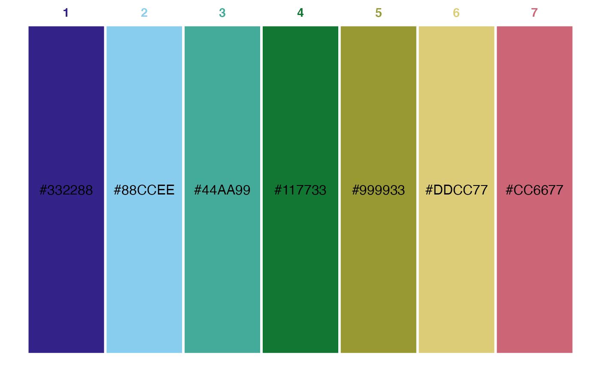

This makes a simple ggplot with boxes side by side of each color in a vector. Numbers along the top show the position of the color in the vector. Optional labels are shown with the name or hexcode of each color; if ggfittext is installed, the labels will be scaled to fit in the rectangles.
color_prev(colors, labels = T, label_color = "black", border = F, border_color = "white", border_size = 0.5)
| colors | Character vector of colors |
|---|---|
| labels | Logical; whether to show color name/hexcode labels |
| label_color | Color to use for optional labels |
| border | Logical; whether to draw border around rects |
| border_color | Color to use for optional borders |
| border_size | Size of optional borders |
ggplot object showing rects for each color
# Paul Tol's colorblind-friendly palette, from ggthemes tol <- c("#332288", "#88CCEE", "#44AA99", "#117733", "#999933", "#DDCC77", "#CC6677") color_prev(tol, border = TRUE, border_size = 1)